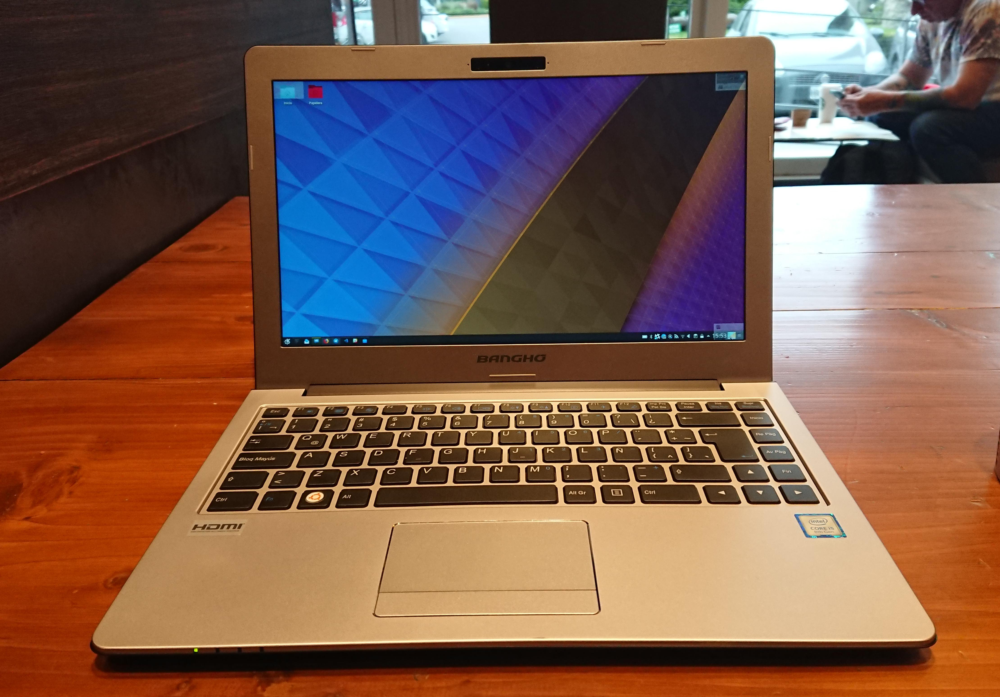

New Laptop
Triggers
Recently, as of last week, I decided to purchase a new laptop to replace my Microsoft Surface Pro 4 with which I was having a bittersweet relationship. The Surface Pro 4 is really nice hardware, I originally got it to get a head start and collaborate on the convergence story with Unity 8 on the desktop, but as is of folk knowledge now, some strategic choices were made.
I still kept the device and actually used it, as I mentioned, it is nice hardware but the support on Linux is just not great, alleviated greatly thanks to jakeday’s kernel tree, yet still not fully supported. Another reason to switch was that I wanted more RAM and being tied to the 8GB offered on this device wasn’t the best for my new work load requirements (read as requiring Slack). And last but not least, I found myself never using it in tablet mode and had awkward moments trying to use it on my lap or just thinking twice before getting it out of my bag to do something quick (as suspending is one of those issues it has on Linux).
Requirements
What I wanted was a laptop that came pre-installed with Ubuntu, previous to the Surface Pro 4 I had a 3rd generation X1 Carbon (which I handed over to my spouse) and before that a System 76 Lemur (lemu4). The lemu4 wasn’t the best spec’ed hardware, nor built with the most premium materials, nor had great battery life… the list goes on; it did however have Ubuntu pre-installed; no hardware/software drama going on. I also learned about Clevo and its relationship to smaller computer shops.
I had been looking at the slimbook after reading through a review from popey for the KDE Slimbook 2.
After my soul searching for a handy reliable partner that would live with me as days pass by and I get things done one thought came to me, I do have one constraint, I live in Argentina. Shipping, to and fro, would be a pain.
I did have one other desire, which was to also support the local economy, so I did some searching around and verified that the local market has improved (maybe thanks to the market being open for computing again with 0% import taxes).
Particularly, I found out that Banghó, a company I initially considered made low quality hardware (which also makes use of Clevo), had an offering for a BES E3 that looked very similar to the KDE Slimbook 2. Except it had the wrong operating system.
After weighing in my options, I decided to go with Banghó, the reason is somewhat simple; I not only want to inject capital into the local economy, but also for the first time ever will be able to make due on the warranty if something ever happens to this device. Some of the previous devices I mentioned had issues which would of been covered by the warranty, but given my location I wasn’t able to make use of in any convenient way.
Unboxing
After making up my mind on the purchase, 3 days later I had the device at my door. As another first, I also did an unboxing video (the video is probably poorly executed when compared to a standard youtuber’s video).
Software
After making some backups, those you need just in case, I popped in a loaded Kubuntu 18.04 USB drive and off I went with the defaults. So far everything is working well. I do wish Kubuntu had some way of reporting back on the installation as Ubuntu has. I might try and run the Ubuntu Report Tool manually just to get this system on the radar.
After getting everything working fine, I am going to see if my friends at System76 are willing to coach Banghó on supporting Linux as a first class citizen. They also have a similar product, the Galago Pro. Maybe, just maybe we can get some form of go-to shop for the region for Linux support.
If there is anything software wise that would need some calibration, and this is not new to anyone who has owned a Clevo type device before, is firmware to get better fan behavior.
Hardware
The hardware is quite nice looking, 
After unboxing though, I noticed it was a bit bigger than I had expected. It turns out the screen is 13 inches but the bezels outgrow that size and is not life the other laptops I have gotten accustomed to. While focusing on the screen, if you look at the photo, that is as far back as the screen goes, so doing some work on this device when on a regular table while standing up is not a thing I can do anymore (not that I did it often enough to make this a deal breaker or anything).
There are some differences when looking at a similar looking slimbook device which was mentioned earlier. One of those differences is that the LEDs are all on the front, so you get to see them while the device is in clamshell mode. Another difference is that the touchpad is much smaller and has dedicated buttons for clicks. These are visual differences that agree with me.
Final thoughts
I am so far happy with the product. Aside from the fan going off in a bit more fury than other devices, this system is working pretty well. I have already taken it to a doctor’s appointment and continue working where I left off like a champ during the long wait (I wasn’t able to with the previous device).
Having an Ubuntu kernel with all the latest and greatest patches is a nice change to having to compile a kernel like a caveman. Suspend working out of the box after not having it is very welcoming and running also nice. After a week, I shut down just to make sure I remembered my full disk encryption passphrase.